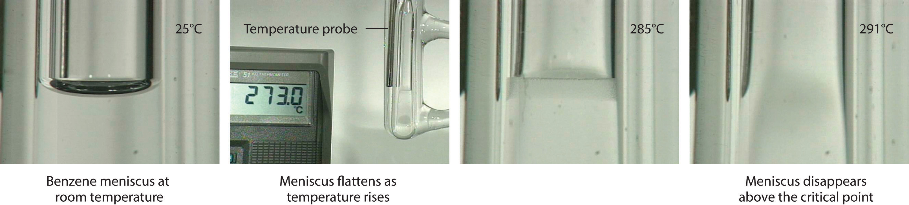

In Chapter 10 "Gases", Section 10.8 "The Behavior of Real Gases", we saw that a combination of high pressure and low temperature allows gases to be liquefied. As we increase the temperature of a gas, liquefaction becomes more and more difficult because higher and higher pressures are required to overcome the increased kinetic energy of the molecules. In fact, for every substance, there is some temperature above which the gas can no longer be liquefied, regardless of pressure. This temperature is the critical temperature (Tc)The highest temperature at which a substance can exist as a liquid, regardless of the applied pressure., the highest temperature at which a substance can exist as a liquid. Above the critical temperature, the molecules have too much kinetic energy for the intermolecular attractive forces to hold them together in a separate liquid phase. Instead, the substance forms a single phase that completely occupies the volume of the container. Substances with strong intermolecular forces tend to form a liquid phase over a very large temperature range and therefore have high critical temperatures. Conversely, substances with weak intermolecular interactions have relatively low critical temperatures. Each substance also has a critical pressure (Pc)The minimum pressure needed to liquefy a substance at its critical temperature., the minimum pressure needed to liquefy it at the critical temperature. The combination of critical temperature and critical pressure is called the critical pointThe combination of the critical temperature and the critical pressure of a substance. of a substance. The critical temperatures and pressures of several common substances are listed in Table 11.7 "Critical Temperatures and Pressures of Some Simple Substances".
High-boiling-point, nonvolatile liquids have high critical temperatures and vice versa.
Table 11.7 Critical Temperatures and Pressures of Some Simple Substances
| Substance | Tc (°C) | Pc (atm) |
|---|---|---|
| NH3 | 132.4 | 113.5 |
| CO2 | 31.0 | 73.8 |
| CH3CH2OH (ethanol) | 240.9 | 61.4 |
| He | −267.96 | 2.27 |
| Hg | 1477 | 1587 |
| CH4 | −82.6 | 46.0 |
| N2 | −146.9 | 33.9 |
| H2O | 374.0 | 217.7 |
To understand what happens at the critical point, consider the effects of temperature and pressure on the densities of liquids and gases, respectively. As the temperature of a liquid increases, its density decreases. As the pressure of a gas increases, its density increases. At the critical point, the liquid and gas phases have exactly the same density, and only a single phase exists. This single phase is called a supercritical fluidThe single, dense fluid phase that exists above the critical temperature of a substance., which exhibits many of the properties of a gas but has a density more typical of a liquid. For example, the density of water at its critical point (T = 374°C, P = 217.7 atm) is 0.32 g/mL, about one-third that of liquid water at room temperature but much greater than that of water vapor under most conditions. The transition between a liquid/gas mixture and a supercritical phase is demonstrated for a sample of benzene in Figure 11.21 "Supercritical Benzene". At the critical temperature, the meniscus separating the liquid and gas phases disappears.
Figure 11.21 Supercritical Benzene
Below the critical temperature of benzene (Tc = 289°C), the meniscus between the liquid and gas phases is apparent. At the critical temperature, the meniscus disappears because the density of the vapor is equal to the density of the liquid. Above Tc, a dense homogeneous fluid fills the tube.
In the last few years, supercritical fluids have evolved from laboratory curiosities to substances with important commercial applications. For example, carbon dioxide has a low critical temperature (31°C), a comparatively low critical pressure (73 atm), and low toxicity, making it easy to contain and relatively safe to manipulate. Because many substances are quite soluble in supercritical CO2, commercial processes that use it as a solvent are now well established in the oil industry, the food industry, and others. Supercritical CO2 is pumped into oil wells that are no longer producing much oil to dissolve the residual oil in the underground reservoirs. The less-viscous solution is then pumped to the surface, where the oil can be recovered by evaporation (and recycling) of the CO2. In the food, flavor, and fragrance industry, supercritical CO2 is used to extract components from natural substances for use in perfumes, remove objectionable organic acids from hops prior to making beer, and selectively extract caffeine from whole coffee beans without removing important flavor components. The latter process was patented in 1974, and now virtually all decaffeinated coffee is produced this way. The earlier method used volatile organic solvents such as methylene chloride (dichloromethane [CH2Cl2], boiling point = 40°C), which is difficult to remove completely from the beans and is known to cause cancer in laboratory animals at high doses.
Arrange methanol, n-butane, n-pentane, and N2O in order of increasing critical temperatures.
Given: compounds
Asked for: order of increasing critical temperatures
Strategy:
A Identify the intermolecular forces in each molecule and then assess the strengths of those forces.
B Arrange the compounds in order of increasing critical temperatures.
Solution:
A The critical temperature depends on the strength of the intermolecular interactions that hold a substance together as a liquid. In N2O, a slightly polar substance, weak dipole–dipole interactions and London dispersion forces are important. Butane (C4H10) and pentane (C5H12) are larger, nonpolar molecules that exhibit only London dispersion forces. Methanol, in contrast, should have substantial intermolecular hydrogen bonding interactions. Because hydrogen bonds are stronger than the other intermolecular forces, methanol will have the highest Tc. London forces are more important for pentane than for butane because of its larger size, so n-pentane will have a higher Tc than n-butane. The only remaining question is whether N2O is polar enough to have stronger intermolecular interactions than pentane or butane. Because the electronegativities of O and N are quite similar, the answer is probably no, so N2O should have the lowest Tc. B We therefore predict the order of increasing critical temperatures as N2O < n-butane < n-pentane < methanol. The actual values are N2O (36.9°C) < n-butane (152.0°C) < n-pentane (196.9°C) < methanol (239.9°C). This is the same order as their normal boiling points—N2O (−88.7°C) < n-butane (−0.2°C) < n-pentane (36.0°C) < methanol (65°C)—because both critical temperature and boiling point depend on the relative strengths of the intermolecular interactions.
Exercise
Arrange ethanol, methanethiol (CH3SH), ethane, and n-hexanol in order of increasing critical temperatures.
Answer: ethane (32.3°C) < methanethiol (196.9°C) < ethanol (240.9°C) < n-hexanol (336.9°C)
Heating a salt to its melting point produces a molten saltA salt that has been heated to its melting point.. If we heated a sample of solid NaCl to its melting point of 801°C, for example, it would melt to give a stable liquid that conducts electricity. The characteristics of molten salts other than electrical conductivity are their high heat capacity, ability to attain very high temperatures (over 700°C) as a liquid, and utility as solvents because of their relatively low toxicity.
Molten salts have many uses in industry and the laboratory. For example, in solar power towers in the desert of California, mirrors collect and focus sunlight to melt a mixture of sodium nitrite and sodium nitrate. The heat stored in the molten salt is used to produce steam that drives a steam turbine and a generator, thereby producing electricity from the sun for southern California.
Due to their low toxicity and high thermal efficiency, molten salts have also been used in nuclear reactors to enable operation at temperatures greater than 750°C. One prototype reactor tested in the 1950s used a fuel and a coolant consisting of molten fluoride salts, including NaF, ZrF4, and UF4. Molten salts are also useful in catalytic processes such as coal gasification, in which carbon and water react at high temperatures to form CO and H2.
Molten salts are good electrical conductors, have a high heat capacity, can maintain a high temperature as a liquid, and are relatively nontoxic.
Although molten salts have proven highly useful, more recently chemists have been studying the characteristics of ionic liquidsIonic substances that are liquids at room temperature and pressure and that consist of small, symmetrical anions combined with larger, symmetrical organic cations that prevent the formation of a highly organized structure., ionic substances that are liquid at room temperature and pressure. These substances consist of small, symmetrical anions, such as PF6− and BF4−, combined with larger, asymmetrical organic cations that prevent the formation of a highly organized structure, resulting in a low melting point. By varying the cation and the anion, chemists can tailor the liquid to specific needs, such as using a solvent in a given reaction or extracting specific molecules from a solution. For example, an ionic liquid consisting of a bulky cation and anions that bind metal contaminants such as mercury and cadmium ions can remove those toxic metals from the environment. A similar approach has been applied to removing uranium and americium from water contaminated by nuclear waste.
Ionic liquids consist of small, symmetrical anions combined with larger asymmetrical cations, which produce a highly polar substance that is a liquid at room temperature and pressure.
The initial interest in ionic liquids centered on their use as a low-temperature alternative to molten salts in batteries for missiles, nuclear warheads, and space probes. Further research revealed that ionic liquids had other useful properties—for example, some could dissolve the black rubber of discarded tires, allowing it to be recovered for recycling. Others could be used to produce commercially important organic compounds with high molecular mass, such as Styrofoam and Plexiglas, at rates 10 times faster than traditional methods.
A substance cannot form a liquid above its critical temperature, regardless of the applied pressure. Above the critical temperature, the molecules have enough kinetic energy to overcome the intermolecular attractive forces. The minimum pressure needed to liquefy a substance at its critical temperature is its critical pressure. The combination of the critical temperature and critical pressure of a substance is its critical point. Above the critical temperature and pressure, a substance exists as a dense fluid called a supercritical fluid, which resembles a gas in that it completely fills its container but has a density comparable to that of a liquid. A molten salt is a salt heated to its melting point, giving a stable liquid that conducts electricity. Ionic liquids are ionic substances that are liquids at room temperature. Their disorganized structure results in a low melting point.
Describe the changes that take place when a liquid is heated above its critical temperature. How does this affect the physical properties?
What is meant by the term critical pressure? What is the effect of increasing the pressure on a gas to above its critical pressure? Would it make any difference if the temperature of the gas was greater than its critical temperature?
Do you expect the physical properties of a supercritical fluid to be more like those of the gas or the liquid phase? Explain. Can an ideal gas form a supercritical fluid? Why or why not?
What are the limitations in using supercritical fluids to extract organic materials? What are the advantages?
Describe the differences between a molten salt and an ionic liquid. Under what circumstances would an ionic liquid be preferred over a molten salt?